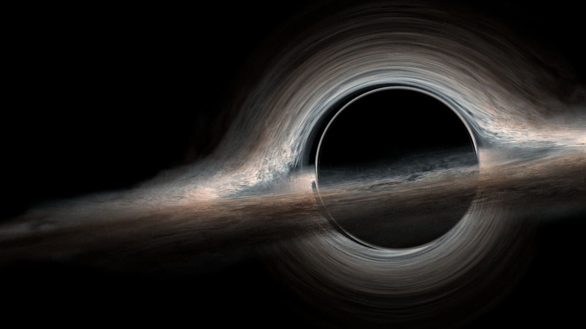
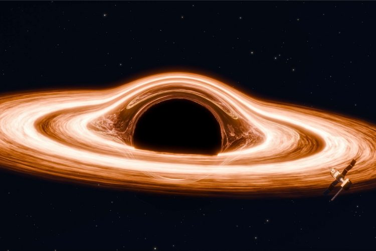
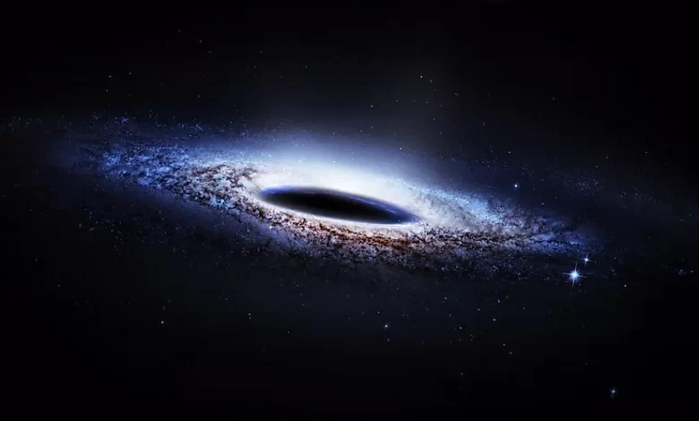
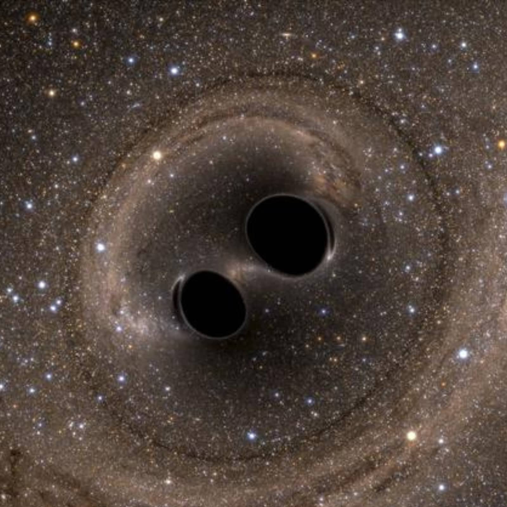

Black Holes in Universe


Gargantua Black Hole
Gargantua is a fictional supermassive black hole featured in the film Interstellar.
It has a
mass of 100 million
solar masses and rotates extremely rapidly.
Its gravitational pull and
the distortion of light around
it were recreated in the film with a high degree of scientific
accuracy.

Ton-618 Black Hole
TON 618 is a hyperluminous quasar and is home to oneof the most massive black
holes ever
discovered. It is located
approximately 18.2 billion light-years away,
from Earth. The
black hole at the center of TON 618 has an
estimated mass of 66 billion times the mass of our
Sun.

Phoenix A Black Hole
Phoenix A is a supermassive black hole, and the largest one currentlyknown, loca
ted at the
center of the Phoenix
Cluster. It has an estimated mass of 100 billion
times that of our
Sun. The Phoenix Cluster is a massive
galaxy cluster located 5.8 billion light-years away.

Gaia BH1 Black Hole
Gaia BH1 is a binary star system located about 1,560 light
years from Earth in the
constellation Ophiuchus. It's notable because it contains a
stellar-mass black hole and a
Sun-like star, making it the
known such system to our solar system.
The black hole is
estimated to be about 10 times the mass of our sun